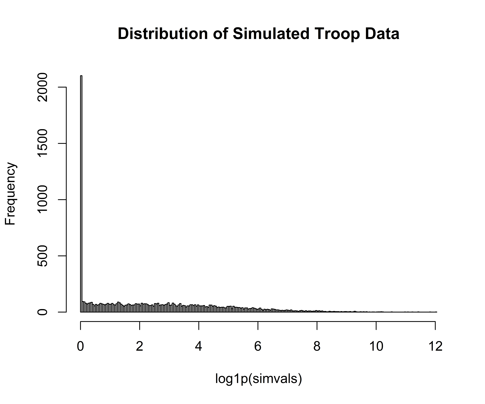

As a part of a larger project I’ve been working with BRMS and some models and family functions that are new to me. In particular, my work on troop deployments has made me think more about hurdle models. I’ve had some experience with zero-inflated models in the past, but haven’t spent a lot of time with hurdle models, specifically. Anyway, without going down the rabbit hole, I’ve been thinking about how to create probability density functions for some of these models. The {countreg} package contains some functions for hurdle negative binomial models, which got me thinking about building something similar for hurdle lognormal distributions. I’m really operating one the frontiers of my own experience/abilities, so I may be way off here, but let’s give this a shot and see if it works.
I work a lot with military deployment data. Typically these are country-year observations of the number of US military personnel stationed in various overseas locations (think Germany, Japan, etc.). So far most of our work has treated deployments as a predictor variable, but more recently we’ve started thinking more about modeling deployment levels themselves. In general, there tends to be a ton of skew in these data. For example, from 1990 forward the troop deployment data we have are more or less distributed like this:
# Simulation . Values reflect what we see in our data.
sims <- 1e4
muval = 2.8
sdval = 2.54
pival = 0.2
simvals <- rep(NA, sims)
simvals[c(1:2000)] <- rep(0, sims*0.2)
simvals[c(2001:10000)] <- rlnorm(sims*0.8, meanlog = muval, sdlog = sdval)
simvals = as.data.frame(simvals)
plot <- ggplot(simvals, aes(simvals)) +
geom_histogram() +
scale_x_continuous(limits = c(-1, 12))
plot## `stat_bin()` using `bins = 30`. Pick better value with `binwidth`.## Warning: Removed 4364 rows containing non-finite values (stat_bin).## Warning: Removed 2 rows containing missing values (geom_bar).
#hist(log1p(simvals), breaks = 200)We’ve got about 20% zero values, and the non-zero values have a median of 16 and a mean of about 1,700. Conceivably every country could receive deployments, but some are highly unlikely to (e.g. North Korea). But even countries that do host US personnel tend to host very small deployments, as you can see by the relatively small median value. The mean is dragged upwards by large, long-standing legacy deployments in places like Germany, Japan, and South Korea.
I’m glossing over a lot of the details here, but working on this has prompted me to think more about using hurdle models (like I already said). Yadda yadda yadda, this has led me to think about what a probability density function for a hurdle model looks like. The {stats} package in R comes with a set of functions for handling lognormal distributions, but doesn’t appear to have anything to handle hurdle variants. Riffing off of the aforementioned {countreg} package, this is my attempt to create something comparable for hurdle lognormal distributions (I couldn’t find one with Elaine).
This is my shot at creating a probability density function…umm…function. I started with the builtin dlnorm() function, but the problem is that it only accepts positive values. If we have a lot of data that are failing to cross that hurdle (i.e. 0 values) then this doesn’t really work. I think the solution is to insert an argument that details the propotion/probability of 0 values in the data (i.e. the pval argument). For non-zero values we have to first get the probability using dlnorm(). Once we generate the probability value for the x value using dlnorm() we then have to weight that probability value by the proportion of non-zero values in the data. In this case we enter a pval argument of 0.2 since 20% of the data are 0s, but when we calculate the probabiltiy for some values > 0 we want to make sure that’s weighted by 0.8 since 80% of observations are > 0. If x equals zero then the probability should (I think?) just default to the pval argument.
dhlnorm <- function(x, meanlog, sdlog, pval) {
if (x > 0) {
value <- dlnorm(x, meanlog = meanlog, sdlog = sdlog, log = FALSE) * (1-pval)
return(value)
} else {
value <- pval
return(value)
}
}
prob <- dhlnorm(3, meanlog = muval, sdlog = sdval, pval = 0.2)
print(prob)## [1] 0.03346686Again, this is very much on the frontiers of my experience, so if anyone has any feedback I’d appreciate it. I have some potential applications in mind, so this is more than just running down a rabbit hole.